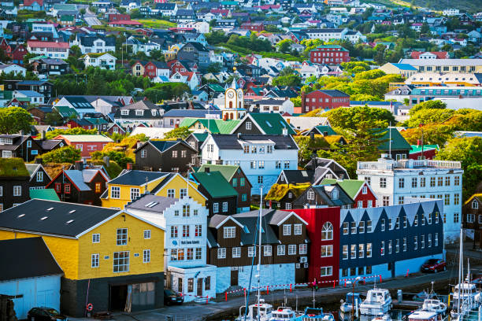

F A R O E I S L A N D S
Fly&Drive
We design your Fly&Drive package to the Faroe Islands, including a car rental for the whole stay, accomodation in the best places and a PDF with places to visit and all the information you need for your adventure.Photography tour
The Faroe Islands are a paradise for any photographer, both beginners and professional. Join one of our photography tours and enjoy our landscapes with a local professional photographer.
Private Guided Tours
Tell us your travel preferences and we'll arrange the perfect private trip you. Enjoy the mosth authentic faroese experiences always with a local guide. We can also provide the most exclusive VIP services upon request.Guided tours
Discover the amazing Faroe Islands with our experienced local guides. We offer regular departures in small groups of maximum 8 people for a very personal service. 6 departures every summer.Covering a total area of about 1,399 km2, the Faroe Islands archipelago comprises 18 principal islands along with numerous small rocky islands and islets. Some of the major islands of the archipelago include Borðoy, Eysturoy, Sandoy, Streymoy, Suðuroy, Svínoy, and Vágar. Out of the 18 main islands of the archipelago, 17 of these islands are inhabited while only the small Lítla Dímun island is uninhabited. Covering an area of 373 km2, the oblong-shaped Streymoy Island is the biggest and the most populous in the Faroe Islands archipelago. Located on the southern edge of the Streymoy island is Tórshavn, the capital and main port of the Faroe Islands archipelago. Eysturoy is the second-largest island on the archipelago that covers an area of about 286.3 km2. The islands are further administratively divided into 29 municipalities that consist of more than 120 settlements.The Faroe Islands have rugged and rocky terrain and are mainly composed of basaltic lava. There are few small elevated peaks and the highly indented coast of the islands features several fjords that are further lined by numerous perpendicular cliffs. Located in the northern part of Eysturoy Island is Slættaratindur, which rises to an elevation of 882 m and is the highest point in the Faroe Island archipelago. There are few small rivers and minor lakes in the Faroe Islands archipelago. According to the Köppen climate classification, the Faroe Islands experiences a subpolar oceanic climate with mild winters and cool summers. The climate of the archipelago is strongly influenced by the warm North Atlantic Current, which helps to keep the harbors on the island ice-free throughout the year.
 At first sight, the Faroe Islands might give the impression of quite a
uniform vegetation with no trees – only a tundra-like appearance. A
closer look however, reveals surprising diversity. he fauna of the Faroe
Islands reflects the islands’ remoteness, as there are few terrestrial
species, but plenty of seabirds and marine animals. While humans have
introduced all of the island’s land mammals, intentionally or otherwise,
most of the birds and marine animals are endemic. When the ice melted
after the last ice age, some 10-20.000 years ago, the islands were bare
rocks with hardly any plants. But as the ice disappeared and the cliffs
crumbled, plants started to grow and they spread. Some Arctic species
such as “Mountain Poppy” and “Dwarf Cudweed” probably survived the last
ice age on some ice-free mountaintops (nunataks), but the majority of
plants growing in the Faroe Islands today arrived after the ice age. The
vegetation of the Faroe Islands archipelago is dominated by grass,
wildflowers, moss, arctic-alpine plants, and lichen. Due to the strong
westerly winds and frequent gales that are faced by the archipelago, the
Faroe Islands are mostly treeless although a few hardy trees have
recently been introduced in the sheltered plantations of the islands.
Numerous avian species are found on the Faroe Islands. These include the
various species of seabirds, common starling, common murre, common
eider, Atlantic puffins, Eurasian wren, and the black guillemot. Few
terrestrial animals are found here including the mountain hare, brown
rat, house mouse, Faroe sheep, Faroe cow, and Faroe pony. Several
cetacean species are recorded in the waters surrounding the Faroe
Islands. Grey seals and long-finned pilot whales are also found here.
Killer whales are frequently observed around
At first sight, the Faroe Islands might give the impression of quite a
uniform vegetation with no trees – only a tundra-like appearance. A
closer look however, reveals surprising diversity. he fauna of the Faroe
Islands reflects the islands’ remoteness, as there are few terrestrial
species, but plenty of seabirds and marine animals. While humans have
introduced all of the island’s land mammals, intentionally or otherwise,
most of the birds and marine animals are endemic. When the ice melted
after the last ice age, some 10-20.000 years ago, the islands were bare
rocks with hardly any plants. But as the ice disappeared and the cliffs
crumbled, plants started to grow and they spread. Some Arctic species
such as “Mountain Poppy” and “Dwarf Cudweed” probably survived the last
ice age on some ice-free mountaintops (nunataks), but the majority of
plants growing in the Faroe Islands today arrived after the ice age. The
vegetation of the Faroe Islands archipelago is dominated by grass,
wildflowers, moss, arctic-alpine plants, and lichen. Due to the strong
westerly winds and frequent gales that are faced by the archipelago, the
Faroe Islands are mostly treeless although a few hardy trees have
recently been introduced in the sheltered plantations of the islands.
Numerous avian species are found on the Faroe Islands. These include the
various species of seabirds, common starling, common murre, common
eider, Atlantic puffins, Eurasian wren, and the black guillemot. Few
terrestrial animals are found here including the mountain hare, brown
rat, house mouse, Faroe sheep, Faroe cow, and Faroe pony. Several
cetacean species are recorded in the waters surrounding the Faroe
Islands. Grey seals and long-finned pilot whales are also found here.
Killer whales are frequently observed around
The first known settlers in the Faroe Islands were Irish monks, who in the 6th century AD told of the “Islands of the Sheep and the Paradise of Birds”.The name of the Faroe Islands first appeared as Føroyar in the Faroese language. The Danish name for the Faroe Islands, Færøerne, is a reflection of Old Norse terms that likely mean “Sheep Islands.” The Faroe Islands were originally inhabited by the Irish monks and then by the Vikings in the early 9th century. The Faroe Islands became a part of the Hereditary Kingdom of Norway in 1035 and 1380 along with the rest of Norway, they were taken over by Denmark. Under the Treaty of Kiel in 1814, the Danish gained complete authority over the Faroe Islands along with Greenland and Iceland. The Faroe Islands became an autonomous country within the Kingdom of Denmark in 1948. Today fisheries and aquaculture are the basis for the production and export of high quality Faroese fish products, which constitute 95 per cent of the total income of exported goods. Diversification of the economy and the development of a welfare society has led to a variety of working opportunities in the modern Faroese society. With economic wealth the Faroese have developed a welfare society much along the lines of the typical Scandinavian welfare state model, e.g. with free education and healthcare for all.